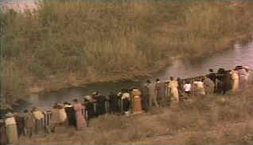

| Like Water for
Chocolate/B+,C |
| Touchstone/1992/105/WS
1.77 |
A dreamlike essence pervades this highly successful
import from Mexico. Magical images that bear direct ancestry to the surreal paintings of
Mexican icon Frida Kahlo are captured on the screen from the novel by Laura Esquivel. Esquivel's
former husband, Alfonso Arau, directs the screenplay by Esquivel, doing justice to the unique
sensibility of the author.
 |
| Down by the riverside. ©Touchstone |
Like Water for Chocolate relates a
Cinderella-like story of the youngest daughter of a Mexican family who's fate is dictated by her
cold and selfish mother. The mother insists that the youngest daughter never marry; instead, she must
stay at home to care for Momma in the silver years of her life. When a suitor for the daughter
presents himself, due to the inflexibility of the mother, he winds up marrying one of the elder
sisters in order to be near his lover. The fate of the family is sealed by the stone heart of the
mother.
The key to the success of this film is the delicate recipe for
romance, pathos and humor. In fact, this is one those food movies where preparation of sumptuous
meals integrates splendidly with the plot. Watch out when peeling those onions chefs. While
there is indeed a large measure of pathos, the film unfolds more like a tall tale, and the
tenor of tone is never tragic. The film opens as the great niece of heroine Tita ponders
information from the cookbook of her great aunt that links her to the family's past. As she begins
the narrative, with an onion atop her head to prevent crying, Like Water for Chocolate takes
on the mythic quality of the stories handled down generation to generation. The transition
from contemporary kitchen to turn of the century Mexico in throes of revolution is folded into the
batter of this piquant film eloquently. It is obvious from the outset that we are about to enjoy a
cinematic meal of delightful preparation.
Lumi Cavazos plays Tita with extraordinary innocence, spiced
delicately by a hunger stimulated by the pungent aromas of a country kitchen. Cavazos anchors the
film solidly. She is a totally sympathetic character. There is even a surreal quality to her being
totally in keeping with the film content. Regina Torne balances the sweetness of Cavazos with the
bitterness of dried chilies in her portrayal of her mother. Claudette Maille is splendid as
the passionate free spirit Gertrudis, the middle sister. Her au natural elopement is hilarious.
The cinematography attempts to accentuate the aspects
fantasy through the use of warm filters and a pale palette. Dark scenes are dimly lit and are
projection sensitive even in the theater. The choice of a more intense palette of colors might have
achieved a greater effect for the film, especially in the depiction of the foods.
Romantic elements translate very well to what might be typically called a
"woman's picture," yet the eccentric sense of humor is appealing to younger audiences. Like
Water for Chocolate is a passionate hybrid that will make an excellent main course for an
evening's entertainment.
The DVD is working from a distinct disadvantage. The pervasive soft and
pale photography does not transfer well to home video, creating demands on the system that are
unreasonable. In order to obtain satisfactory levels of light output, it is necessary to
compromise other aspects of the picture. Perhaps adjustments could have been made at the
transfer stage to diminish this problem to some degree, but one can argue that the transfer
successfully mirrors the intent of the director. The pressing is clean and the colors are not
blurred, and the stereo sound is fine, though not overly aggressive for those who like a big punch.
The yellow English subtitles are easy to read and Touchstone has provided an alternate dubbed
English soundtrack on the analog tracks. (I found the dubbing a detriment to the acting, but it is
a major convenience for those of you who abhor titles.
|
|
|
|

Selections from the feature archive include articles on
Akira Kurosawa, Frank
Darabont, Blonde Bimbos, Hollywood Street Gangs, or Vietnam: The
Hollywood Pariah, and many more....
Sturges Emerges
Preston Sturges was Hollywood's resident comic genius for more than a decade. His movies are
timeless. Click on his image to read all about it.

 Gary Morris's insightful publication Bright Lights
Film Journal turns the celluloid in films from a unique perspective. Click on the image above
for more pure movie views. Gary Morris's insightful publication Bright Lights
Film Journal turns the celluloid in films from a unique perspective. Click on the image above
for more pure movie views.

Click on the link to visit the judge's chambers.
Imaging Science Foundation
The Imaging Science Foundation promotes proper standards in home theater viewing. ISF trained
technicians offer monitor calibration services to consumers. The difference in a properly
calibrated monitor can be astounding. Click on the image to find an ISF member near you.

Information on film sound in theaters and home theaters. Lots of helpful information provided in a
handsome interface.

The Movie Poster
Archive includes extensive poster images from the films of stars like Susan Hayward, Kirk Douglas,
Katharine Hepburn and many more. Our
featured star is Kirk Douglas.
|